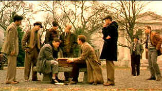

| A Beautiful Mind (SE)/ A-, A |
| Universal/2001/136/ANA 1.85 |
A Beautiful Film! The
combination of Akiva Goldsman's economical screenplay and Russell Crowe's
stunning performance as Nobel Prize winning mathematician John Nash create
a powerful, moving experience. The raw power of the film overcomes any
minor flaws.
A Beautiful Mind is a journey through the
life of the brilliant but troubled Nash, who traveled a classic character
arc. As a Princeton graduate student his original work garnered him
recognition as one of the greatest mathematical minds of his time; and
then slowly everything fell apart as questions about his mental stability
systematically destroyed his career and life. Finally, in his twilight
years Nash received the Nobel Prize for Economics. Uniquely, the prize was
awarded almost fifty years after the seminal work was published. The film
takes us from Nash's first day as a Princeton graduate student to his
Nobel award in 1994.
|
 |
|
Nash takes up the challenge. ©Universal |
While A Beautiful Mind is loosely based
on the real life story of the genius mathematician, don't go into the
theatre expecting an accurate biography. The film is a fiction that
captures the essence of Nash's life. Screenwriter Goldsman wisely pares
down Nash's experience to create a thoughtful and honest emotional
narrative, with some thriller elements to create an interesting
twist. Although Goldsman's screenplay may over-simplify Nash in removing
many of the awful aspects of his history it effectively keeps focus on the
central theme.
Any gaps in character are filled in by Russell Crowe’s
Oscar© caliber performance. He is
Nash, not Russell Crowe playing Nash. Through speech patterns and
mannerisms, he captures a Nash trapped by both his own sense of
superiority and frustrated by his lack of social eloquence. It’s a
stirring performance that forces audience empathy despite the obviously
disagreeable aspects of Nash’s personality. Indeed, above anything else,
the film is a one-man tour-de-force by Crowe, once again proving why he is
one of the most talented actors in Hollywood today. Jennifer Connelly
gives a good performance as Nash's wife Alicia, although there isn't
enough meat to the role to really test her mettle. The rest of the cast
plays their parts well, but their characters are only devices to advance
the journey into Nash's mind.
Much as he did in Apollo 13, Ron
Howard injects tension beyond reasonable expectation. You may know the
outcome of this fact-based film, but Howard cranks up excitement and keeps
the audience on edge without sacrificing the human aspect. In A Beautiful Mind he weaves a love story, a history, and a thriller
into a complicated web. Each aspect is respected yet blends together to
enhance the film as a whole. Similarly, Howard uses an interesting special
effect (nicely done by Digital Domain) to illustrate Nash's mathematical
revelations, and with a subtle twist is able to use this effect to
illustrate both a sense of wonder, and later in the film, a sense of
horror, creating a nice parallel to how Nash's gift became his curse.
A Beautiful Mind
is a touching film to experience. It's one of those rare features that
envelopes you so much in the mind of the central character, that you come
away feeling that you know, at least somewhat, what it must have been like
to be him.----------Alex Kobak
A beautiful transfer! The vision of Ron Howard and his filmmaking team
comes to DVD with stunning care. A Beautiful Mind is
always sharp enough to penetrate deep into the performance of Russell
Crowe. Every production detail is perfectly resolved. There are no
discernible artifacts. Straight lines are rock-solid stable. The image has
consistently grand depth. No sign of high peak transition edge artifacts
either. The color and lighting are wonderful. Fully saturated and accurate
tones capture Howard's thematic moods. The warmth of remembrance and the
shadows of doubt are illuminated with precision. All the luster of virgin
theatrical presentation is replicated on the DVD. Lots of light output and
terrific contrast make the picture jump off the home theater screen.
Shadow detail is captured accurately. Blacks are produced with lustrous
results. James Horner's score get a rich presentation with music floating
in grand space on the Dolby Digital 5:1 tracks. Surround information
creates a live ambiance with details precisely.
Universal has packaged A Beautiful Mind as
a 2-DVD special edition. On disc one separate feature commentary is
provided by director Ron Howard on one track and screenwriter Akiva
Goldsman on another. Howard is generous and comfortable in expanding on
the material, explaining what's been left out, and the decision making
process. He also explains how some of the visual aspects of camera try to
tie ideas together. Goldsman's and Howard's commentary overlap
information but they have different voices. A 27-minute treasure chest
of 18 deleted or expanded scenes with or without commentary by Ron
Howard is also included on disc one. Disc two is broken down into numerous
themes short that focus on varied production aspects. A Beautiful
Partnership runs about five minutes and Development of the
Screenplay eight minutes, Meeting John Nash eight minutes
includes some video of Nash working math on a blackboard caught by
producer Todd Hallowell. A two minute segment Accepting the Nobel Prize
in Economics was recorded at the 1994 Stockholm award ceremony.
Casting Russell Crowe and Jennifer Connelly runs almost six minutes. The
Process of Age Progression seven minutes, a thirty second Storyboard
Comparison explanation introduces five stacked storyboard/film
comparisons. Creation of the Special Effects runs a little more
than ten minutes , Scoring the Film six minutes, a general
documentary Inside A Beautiful Mind is 22 plus minutes. -----SJK |
|
|
|

Selections from the Feature
Archive include articles on Akira Kurosawa, Frank Darabont, Blonde Bimbos, Hollywood Street Gangs, or Vietnam: The Hollywood Pariah, and many
more....
Screen
Voices
.jpg)
Screen Voices and style of delivery often stamp an actor's
screen image indelibly. Click the lips to read more.
 
Manufacturer of computer-video interfaces, switchers, distribution
amplifiers, computer-video scan converters, and high resolution cable.
Found in many high end home theater systems.

BargainFlix doesn't sell movies! We just tell you where to get them
for the best price! DVD reviews, giveaways and more.

The DVD Forum is an international association of hardware manufacturers,
software firms and other users of Digital Versatile Discs (the "DVD
Format"), created for the purpose of exchanging and disseminating
ideas and information about the DVD Format and its technical capabilities,
improvements and innovations.
 The Cinematheque is a cultural,
arts organization that programs year-round specialty film series at the
newly renovated, landmark 1922 Egyptian Theatre on
Hollywood Boulevard! The Cinematheque is a cultural,
arts organization that programs year-round specialty film series at the
newly renovated, landmark 1922 Egyptian Theatre on
Hollywood Boulevard!
 Have you visited Home Theater Talk
lately? One of the friendliest places on the Net for Home Theater and DVD
discussion, you can get help for installation problems or simply share
your opinions with other Vidiots. Have you visited Home Theater Talk
lately? One of the friendliest places on the Net for Home Theater and DVD
discussion, you can get help for installation problems or simply share
your opinions with other Vidiots.

The home of John Tisch's invaluable Poster Price Almanac. Every serious poster
collector uses the Almanac as a reference.
 It rains a lot in Portland, so DVDcorner.net
provides an umbrella of entertainment with lots of DVD reviews and DVD
news. Check out the monthly give-a-ways too!. It rains a lot in Portland, so DVDcorner.net
provides an umbrella of entertainment with lots of DVD reviews and DVD
news. Check out the monthly give-a-ways too!.

The Movie Poster Archive
includes extensive poster images from the films of stars like Susan
Hayward, Kirk Douglas, Katharine Hepburn and many more. Our featured
star is Tyrone Power.

Click on the DVD MIA symbol for profiles of DVDs missing
in action.
Add films to the DVD MIA Master List by filling out a simple
form. Click Here

To Kill a Mockingbird (SE)/ A,A

From the great novel by Harper Lee, this tale of growing up in
the 1930s South is splendidly evocative of place and period. Gregory Peck
is splendid. Direction impeccable.
|